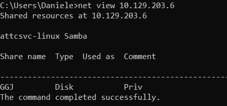
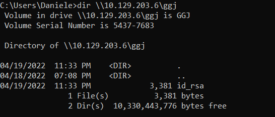
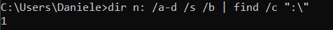
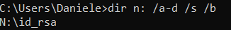

Windows CMD
1.
net view: Check Available Shared Folders
2.
dir: Show content of the shared folder
3.
net use: connects a computer to or disconnects a computer from a shared resource or displays information about computer connections. We can connect to a file share with the following command and map its content to the drive letter n.
◇ anonymous authentication
net use n: \\[address]\\folder
◇ authenticate with user and password
net use n: \\[address]\\folder /user:[username] [password]
With the shared folder mapped as the n drive, we can execute Windows commands as if this shared folder is on our local computer.
4.
dir: find how many files the shared folder and its subdirectories contain the new created n drive
dir n: /a-d /s /b | find /c ":\"
◇ dir → Application
◇ n: → Directory or drive to search
◇ /a-d → /a is the attribute and -d means not directories
◇ /s → Displays files in a specified directory and all subdirectories
◇ /b → Uses bare format (no heading information or summary)
◇ | find /c ":\\" → process the output of ‘dir n: /a-d /s /b’ to count how many files exits in the directory and subdirectories.
▪ You can use `dir /?` to see the full help.
 it this example only one file
5. To list all the files
6. To search for specific file. We can use findstr(
https://docs.microsoft.com/en-us/windows-server/administration/windows-commands/findstr)
With `dir` we can search for specific names in files such as:
▪ cred
▪ password
▪ users
▪ secrets
▪ key
▪ Common File Extensions for source code such as: .cs, .c, .go, .java, .php, .asp, .aspx, .html.
◇ We can use findstr concatenated to dir
dir n: /a-d /s /b | findstr "PATTERN"
◇ findstr
examples:
https://docs.microsoft.com/en-us/windows-server/administration/windows-commands/findstr#examples findstr /s /i PATTERN n:\*.*